DinoEarth
Guía completa del plugin de dinosaurios · versión 0.13.0
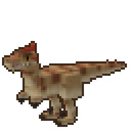
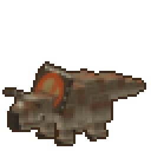
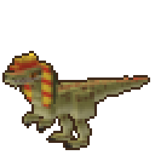
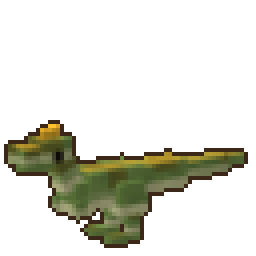
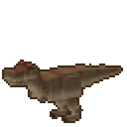
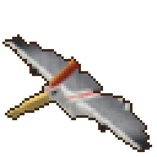
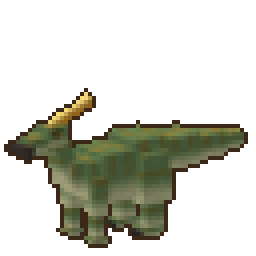
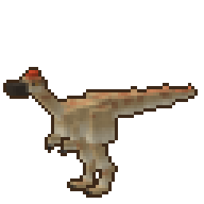
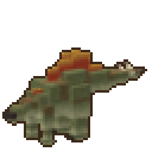
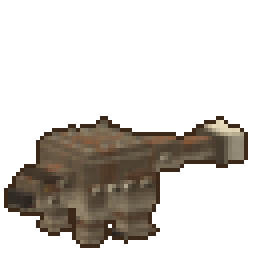
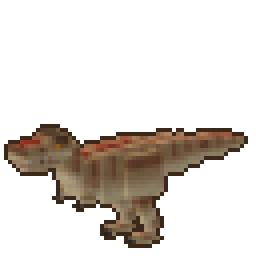
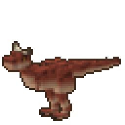
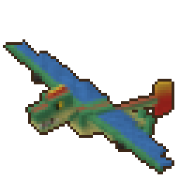
Para la modalidad Minecraft Earth de Angeloww_ · Paper 1.21.11 · clientes 1.21.4 en adelante
Contenido
- Qué es DinoEarth
- Instalación y resource pack
- Las 13 especies
- Domesticar, cuidar y criar
- Montar y volar
- Silbato: órdenes, llamar de regreso y avisos
- Ítems: drops, monturas, silbato, jaula y comederos
- Dinopedia: fichas, sellos, rangos, huellas y lupa
- Misiones diarias
- Comandos y permisos
- Configuración (config.yml)
- Textos y menús (YML)
- Rendimiento y límites
- Problemas comunes
1. Qué es DinoEarth
DinoEarth agrega 13 especies de dinosaurios al server, con modelos y animaciones propias, sin mods en el
cliente: todo viene en un resource pack que el plugin manda solo al entrar. Cada dino nace en uno de varios
colores (uno de ellos raro), es macho o hembra y la mayoría tiene crías que crecen.
Se pueden domesticar, montar (el pteranodon vuela), criar con huevos, darles
órdenes con un silbato, guardarlos en jaulas, regalarlos y seguirles el rastro con la
Dinopedia, un libro con fichas dibujadas, sellos de investigación, rangos y misiones diarias.
Cómo está hecho: cada dino es un lobo invisible (que pone la IA, la vida y la domesticación)
con una pieza del modelo por hueso montada encima. El cliente interpola las poses, así que las animaciones se ven
suaves aunque el server mande poco.
Resumen de especies
| Especie | Tamaño | Carácter | Come | Domesticable | Montura | Colores |
|---|
| Velociraptor | 2 × 3,6 bloques | Neutral | Carne cruda | Sí | Sí | 6 |
| Triceratops | 2,2 × 5,3 bloques | Tranquilo | Plantas | Sí | Sí | 5 |
| Dilophosaurus | 2 × 3,3 bloques | Hostil | Carne cruda | No | No | 4 |
| Compsognathus | 0,6 × 1,4 bloques | En manada | Carne cruda | No | No | 4 |
| Tyrannosaurus rex | 3,4 × 7,3 bloques | Neutral | Carne cruda | Huevo | Sí | 5 |
| Pteranodon | 6,5 bloques de ala a ala | Neutral | Pescado crudo | Sí | Vuela | 5 |
| Parasaurolophus | 2,4 × 5,2 bloques | Asustadizo | Plantas | Sí | Sí | 5 |
| Gallimimus | 2,2 × 3,7 bloques | Asustadizo | Plantas | Sí | Sí | 5 |
| Stegosaurus | 2,4 × 4,5 bloques | Tranquilo | Plantas | Sí | Sí | 5 |
| Ankylosaurus | 1,6 × 4,3 bloques | Tranquilo | Plantas | Sí | Sí | 5 |
| Giganotosaurus | 3,3 × 7,6 bloques | Neutral | Carne cruda | Huevo | Sí | 5 |
| Carnotaurus | 2,4 × 4,4 bloques | Neutral | Carne cruda | Sí | Sí | 5 |
| Dimorphodon | 0,7 bloques, 2 de ala a ala | Neutral | Pescado crudo | Sí | A tu lado | 5 |
2. Instalación y resource pack
Instalar o actualizar
- Copiá
DinoEarth-0.13.0.jar en plugins/ (borrá el jar anterior) y reiniciá el server.
- La primera vez se crean
plugins/DinoEarth/config.yml, messages.yml, textos.yml,
items.yml y la carpeta menus/. Al actualizar, las opciones y textos nuevos se agregan solos
sin tocar lo que cambiaste (el config anterior queda como config-anterior.yml).
- Configurá el resource pack (abajo) y probá con
/dino pack info.
El resource pack
El plugin le manda el pack a cada jugador al entrar. Hay dos formas:
| Modo | Cómo funciona | Cuándo usarlo |
|---|
url | Subís DinoEarth-ResourcePack.zip a un sitio de descarga directa (por ejemplo
mc-packs.net), pegás el link en resource-pack.url y hacés /dino pack reload. El plugin lo descarga
al arrancar, le calcula el hash y avisa si el zip subido no es el de esta versión. | Si tu hosting no deja abrir puertos. |
host | El plugin sirve él mismo el pack que trae adentro del jar. No hay que subir nada: alcanza con
cambiar el jar. | Si podés abrir un puerto (por defecto 8163) y poner la IP o dominio en
resource-pack.host.public-address. |
Importante: cada vez que una versión dice que el pack cambió, en modo url hay que
subir el zip nuevo y cambiar el link. Si no, los jugadores siguen con el pack viejo: aparecen cuadrados violeta y negro
o letras como cuadraditos en los menús nuevos. /dino pack info muestra el link y el sha1 que se está mandando.
Con resource-pack.required: true quien rechace el pack no puede entrar. Si usás este sistema, sacá
resource-pack de server.properties para que no se descargue dos veces.
Clientes
El pack sirve desde Minecraft 1.21.4 en adelante (detrás de Velocity con ViaVersion entran otras versiones
mientras sean 1.21.4 o más nuevas). No usa brillos ni contornos (compatibles con VulkanMod) y las texturas están
empaquetadas para ocupar poca memoria de video.
3. Las 13 especies
Valores por defecto (todos se pueden cambiar en config.yml, sección species). Las
velocidades de montura van en bloques por tick: un jugador caminando hace ~0,22 y corriendo ~0,28.
Velociraptor
Cazador ágil y astuto. Domesticado es una montura rápida y saltarina.
Tamaño adulto: 2 × 3,6 bloques · En comandos: raptor, velociraptor
| Vida | 30 | Daño | 6 | Velocidad | 0.36 |
|---|
| Carácter | Neutral: caza animales chicos y se defiende |
|---|
| Come | Carne cruda |
|---|
| Domesticar | Dándole carne cruda (25 % por bocado) |
|---|
| Montura | Sí, con montura_raptor (camina 0.32, corre 0.5 bloques/tick, salto 0.58) |
|---|
| Hambre | 80 min de lleno a muerto de hambre (estómago 40 puntos) |
|---|
| Crías | Sí: macho y hembra adultos domesticados y bien alimentados ponen huevos |
|---|
| Colores | Arena, Gris azulado, Selva, Rojizo, Oscuro, Albino (raro) |
|---|
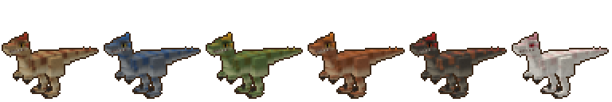
| Suelta | Cant. | Prob. |
|---|
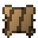 | Cuero de velociraptor cuero_raptor | 1–3 | 100 % |
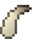 | Garra de velociraptor garra_raptor | 1–2 | 50 % |
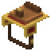 | Montura de Velociraptor montura_raptor | Se craftea (Shopkeepers); la suelta si muere ensillado |
Triceratops
Tranquilo hasta que lo molestan. Montado y corriendo arrolla lo que tenga adelante.
Tamaño adulto: 2,2 × 5,3 bloques · En comandos: triceratops, trike, tricera
| Vida | 80 | Daño | 9 | Velocidad | 0.27 |
|---|
| Carácter | Tranquilo: embiste si lo atacan |
|---|
| Come | Plantas |
|---|
| Domesticar | Dándole plantas (20 % por bocado) |
|---|
| Montura | Sí, con montura_triceratops (camina 0.24, corre 0.36 bloques/tick, salto 0.42) |
|---|
| Hambre | 100 min de lleno a muerto de hambre (estómago 90 puntos) |
|---|
| Crías | Sí: macho y hembra adultos domesticados y bien alimentados ponen huevos |
|---|
| Colores | Pardo, Oliva, Pizarra, Rojizo, Albino (raro) |
|---|
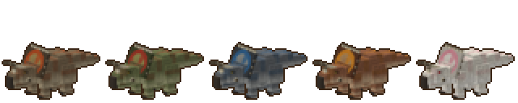
- Embestida: montado y corriendo arrolla y tira lejos lo que tenga adelante.
| Suelta | Cant. | Prob. |
|---|
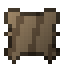 | Cuero de triceratops cuero_triceratops | 2–4 | 100 % |
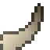 | Cuerno de triceratops cuerno_triceratops | 1–1 | 50 % |
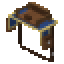 | Montura de Triceratops montura_triceratops | Se craftea (Shopkeepers); la suelta si muere ensillado |
Dilophosaurus
Abre la gola del cuello y escupe veneno que ciega. Mejor verlo de lejos.
Tamaño adulto: 2 × 3,3 bloques · En comandos: dilophosaurus, dilo
| Vida | 24 | Daño | 5 | Velocidad | 0.33 |
|---|
| Carácter | Hostil: ataca a los jugadores que ve |
|---|
| Come | Carne cruda |
|---|
| Domesticar | No se domestica |
|---|
| Montura | No se puede montar |
|---|
| Hambre | No tiene hambre |
|---|
| Crías | No pone huevos (no tiene forma de cría) |
|---|
| Colores | Amarillo, Verde, Pardo, Albino (raro) |
|---|
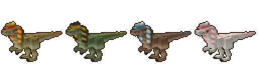
- Escupe veneno: abre la gola y da ceguera y veneno.
| Suelta | Cant. | Prob. |
|---|
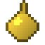 | Glándula venenosa glandula_dilophosaurus | 1–1 | 70 % |
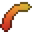 | Cresta de dilophosaurus cresta_dilophosaurus | 1–1 | 40 % |
Compsognathus
Chiquito y cobarde solo, peligroso en banda: ataca a los heridos.
Tamaño adulto: 0,6 × 1,4 bloques · En comandos: compsognathus, compy, compi
| Vida | 6 | Daño | 2 | Velocidad | 0.4 |
|---|
| Carácter | En manada: ataca a los heridos o si son muchos |
|---|
| Come | Carne cruda |
|---|
| Domesticar | No se domestica |
|---|
| Montura | No se puede montar |
|---|
| Hambre | No tiene hambre |
|---|
| Crías | No pone huevos (no tiene forma de cría) |
|---|
| Colores | Verde, Pardo, Gris, Albino (raro) |
|---|
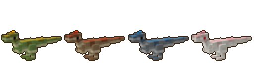
- Manada: aparecen de a 5 y cazan juntos.
| Suelta | Cant. | Prob. |
|---|
 | Diente de compsognathus diente_compsognathus | 1–1 | 50 % |
Tyrannosaurus rex
El rey. Su rugido paraliza de miedo. Solo se domestica criándolo desde el huevo.
Tamaño adulto: 3,4 × 7,3 bloques · En comandos: trex, t-rex, rex, tiranosaurio, tyrannosaurus
| Vida | 160 | Daño | 14 | Velocidad | 0.3 |
|---|
| Carácter | Neutral: caza animales chicos y se defiende |
|---|
| Come | Carne cruda |
|---|
| Domesticar | Solo naciendo de un huevo |
|---|
| Montura | Sí, con montura_trex (camina 0.26, corre 0.42 bloques/tick, sin salto) |
|---|
| Hambre | 70 min de lleno a muerto de hambre (estómago 120 puntos) |
|---|
| Crías | Sí: macho y hembra adultos domesticados y bien alimentados ponen huevos |
|---|
| Colores | Pardo, Oscuro, Verde musgo, Rojizo, Albino (raro) |
|---|
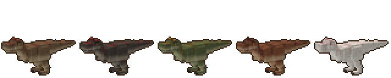
- Salvaje es territorial: te persigue aunque no lo ataques.
- Solo se domestica criándolo desde el huevo (los salvajes no aceptan comida).
- Rugido: da lentitud y oscuridad a los que están cerca. Montado, la barra espaciadora ruge en vez de saltar.
| Suelta | Cant. | Prob. |
|---|
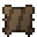 | Cuero de T-Rex cuero_trex | 3–5 | 100 % |
 | Diente de T-Rex diente_trex | 1–3 | 80 % |
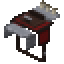 | Montura de Tyrannosaurus rex montura_trex | Se craftea (Shopkeepers); la suelta si muere ensillado |
Pteranodon
Reptil volador que pesca en las costas. Domesticado te lleva por el aire.
Tamaño adulto: 6,5 bloques de ala a ala · En comandos: pteranodon, ptera, ptero, pterodactilo, pterodactyl
| Vida | 28 | Daño | 4 | Velocidad | 0.3 |
|---|
| Carácter | Neutral: caza animales chicos y se defiende |
|---|
| Come | Pescado crudo |
|---|
| Domesticar | Dándole pescado crudo (20 % por bocado) |
|---|
| Montura | Sí, con montura_pteranodon (camina 0.16, corre 0.22 bloques/tick, salto 0.55). Vuela a 0.55 (0.9 con Ctrl) |
|---|
| Hambre | 80 min de lleno a muerto de hambre (estómago 36 puntos) |
|---|
| Crías | Sí: macho y hembra adultos domesticados y bien alimentados ponen huevos |
|---|
| Colores | Gaviota, Pardo, Pizarra, Celeste, Albino (raro) |
|---|
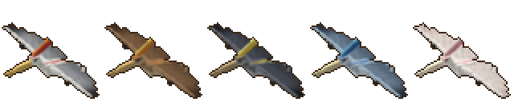
- Vuela: montado te lleva por el aire. Salvaje y lastimado, se escapa volando.
| Suelta | Cant. | Prob. |
|---|
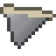 | Membrana de pteranodon membrana_pteranodon | 1–2 | 100 % |
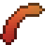 | Cresta de pteranodon cresta_pteranodon | 1–1 | 40 % |
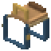 | Montura de Pteranodon montura_pteranodon | Se craftea (Shopkeepers); la suelta si muere ensillado |
Parasaurolophus
Anda en manada y huye. Cuando uno se asusta trompetea con la cresta y salen todos corriendo.
Tamaño adulto: 2,4 × 5,2 bloques · En comandos: parasaurolophus, para, parasaurio
| Vida | 60 | Daño | 6 | Velocidad | 0.3 |
|---|
| Carácter | Asustadizo: huye en manada |
|---|
| Come | Plantas |
|---|
| Domesticar | Dándole plantas (15 % por bocado) |
|---|
| Montura | Sí, con montura_parasaurolophus (camina 0.27, corre 0.42 bloques/tick, salto 0.5) |
|---|
| Hambre | 100 min de lleno a muerto de hambre (estómago 80 puntos) |
|---|
| Crías | Sí: macho y hembra adultos domesticados y bien alimentados ponen huevos |
|---|
| Colores | Verde, Pardo, Azul, Rojizo, Albino (raro) |
|---|
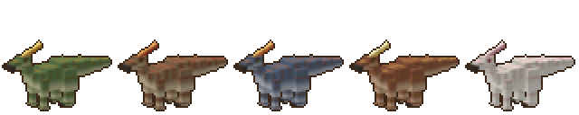
- Presa: si uno se asusta avisa y huye toda la manada. Acercate agachado para darle de comer.
| Suelta | Cant. | Prob. |
|---|
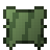 | Cuero de parasaurolophus cuero_parasaurolophus | 1–3 | 100 % |
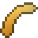 | Cresta de parasaurolophus cresta_parasaurolophus | 1–1 | 40 % |
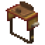 | Montura de Parasaurolophus montura_parasaurolophus | Se craftea (Shopkeepers); la suelta si muere ensillado |
Gallimimus
El "avestruz" de los dinosaurios: huye en bandada y domesticado es la montura más rápida.
Tamaño adulto: 2,2 × 3,7 bloques · En comandos: gallimimus, galli, gallimimo
| Vida | 24 | Daño | 3 | Velocidad | 0.42 |
|---|
| Carácter | Asustadizo: huye en manada |
|---|
| Come | Plantas |
|---|
| Domesticar | Dándole plantas (15 % por bocado) |
|---|
| Montura | Sí, con montura_gallimimus (camina 0.36, corre 0.64 bloques/tick, salto 0.62) |
|---|
| Hambre | 70 min de lleno a muerto de hambre (estómago 40 puntos) |
|---|
| Crías | Sí: macho y hembra adultos domesticados y bien alimentados ponen huevos |
|---|
| Colores | Arena, Gris, Verde, Naranja, Albino (raro) |
|---|
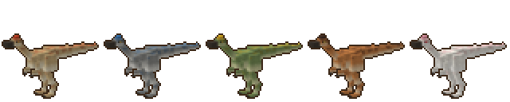
- Presa: si uno se asusta avisa y huye toda la manada. Acercate agachado para darle de comer.
| Suelta | Cant. | Prob. |
|---|
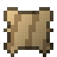 | Cuero de gallimimus cuero_gallimimus | 1–2 | 100 % |
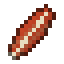 | Pluma de gallimimus pluma_gallimimus | 1–3 | 70 % |
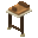 | Montura de Gallimimus montura_gallimimus | Se craftea (Shopkeepers); la suelta si muere ensillado |
Stegosaurus
Placas en el lomo y púas en la cola: al que le pega por atrás le da un coletazo.
Tamaño adulto: 2,4 × 4,5 bloques · En comandos: stegosaurus, stego, estegosaurio
| Vida | 90 | Daño | 10 | Velocidad | 0.25 |
|---|
| Carácter | Tranquilo: embiste si lo atacan |
|---|
| Come | Plantas |
|---|
| Domesticar | Dándole plantas (15 % por bocado) |
|---|
| Montura | Sí, con montura_stegosaurus (camina 0.22, corre 0.34 bloques/tick, salto 0.4) |
|---|
| Hambre | 110 min de lleno a muerto de hambre (estómago 90 puntos) |
|---|
| Crías | Sí: macho y hembra adultos domesticados y bien alimentados ponen huevos |
|---|
| Colores | Oliva, Pardo, Gris, Rojizo, Albino (raro) |
|---|
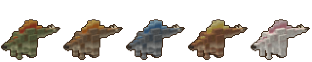
- Cola con púas: al que le pega por atrás le da un coletazo.
| Suelta | Cant. | Prob. |
|---|
| Cuero de stegosaurus cuero_stegosaurus | 2–4 | 100 % |
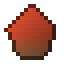 | Placa de stegosaurus placa_stegosaurus | 1–2 | 60 % |
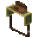 | Montura de Stegosaurus montura_stegosaurus | Se craftea (Shopkeepers); la suelta si muere ensillado |
Ankylosaurus
Un tanque acorazado: las flechas casi no le hacen nada y la maza de la cola tira lejos.
Tamaño adulto: 1,6 × 4,3 bloques · En comandos: ankylosaurus, anky, anquilosaurio
| Vida | 110 | Daño | 8 | Velocidad | 0.22 |
|---|
| Carácter | Tranquilo: embiste si lo atacan |
|---|
| Come | Plantas |
|---|
| Domesticar | Dándole plantas (15 % por bocado) |
|---|
| Montura | Sí, con montura_ankylosaurus (camina 0.2, corre 0.3 bloques/tick, salto 0.35) |
|---|
| Hambre | 110 min de lleno a muerto de hambre (estómago 90 puntos) |
|---|
| Crías | Sí: macho y hembra adultos domesticados y bien alimentados ponen huevos |
|---|
| Colores | Pardo, Musgo, Piedra, Arcilla, Albino (raro) |
|---|
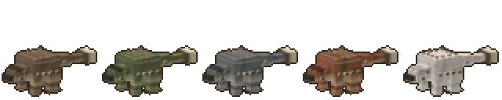
- Maza en la cola: coletazo que tira lejos, también a los costados.
- Acorazado: las flechas y proyectiles le hacen un 35 % del daño.
| Suelta | Cant. | Prob. |
|---|
| Cuero de ankylosaurus cuero_ankylosaurus | 2–4 | 100 % |
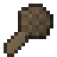 | Mazo de ankylosaurus mazo_ankylosaurus | 1–1 | 30 % |
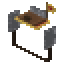 | Montura de Ankylosaurus montura_ankylosaurus | Se craftea (Shopkeepers); la suelta si muere ensillado |
Giganotosaurus
El gigante argentino, rival del T-Rex: un poco más rápido y más largo. Solo se cría desde el huevo.
Tamaño adulto: 3,3 × 7,6 bloques · En comandos: giganotosaurus, giga, giganotosaurio
| Vida | 150 | Daño | 15 | Velocidad | 0.33 |
|---|
| Carácter | Neutral: caza animales chicos y se defiende |
|---|
| Come | Carne cruda |
|---|
| Domesticar | Solo naciendo de un huevo |
|---|
| Montura | Sí, con montura_giganotosaurus (camina 0.28, corre 0.46 bloques/tick, sin salto) |
|---|
| Hambre | 65 min de lleno a muerto de hambre (estómago 120 puntos) |
|---|
| Crías | Sí: macho y hembra adultos domesticados y bien alimentados ponen huevos |
|---|
| Colores | Arena, Gris, Rojizo, Verde, Albino (raro) |
|---|
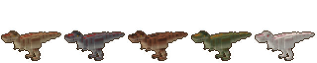
- Salvaje es territorial: te persigue aunque no lo ataques.
- Solo se domestica criándolo desde el huevo (los salvajes no aceptan comida).
- Rugido: da lentitud y oscuridad a los que están cerca. Montado, la barra espaciadora ruge en vez de saltar.
| Suelta | Cant. | Prob. |
|---|
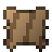 | Cuero de giganotosaurus cuero_giganotosaurus | 3–5 | 100 % |
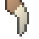 | Diente de giganotosaurus diente_giganotosaurus | 1–3 | 80 % |
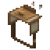 | Montura de Giganotosaurus montura_giganotosaurus | Se craftea (Shopkeepers); la suelta si muere ensillado |
Carnotaurus
El "toro carnívoro" argentino: cuernos sobre los ojos y patas largas. Montado y corriendo embiste.
Tamaño adulto: 2,4 × 4,4 bloques · En comandos: carnotaurus, carno, carnotauro
| Vida | 45 | Daño | 8 | Velocidad | 0.4 |
|---|
| Carácter | Neutral: caza animales chicos y se defiende |
|---|
| Come | Carne cruda |
|---|
| Domesticar | Dándole carne cruda (12 % por bocado) |
|---|
| Montura | Sí, con montura_carnotaurus (camina 0.34, corre 0.56 bloques/tick, salto 0.55) |
|---|
| Hambre | 80 min de lleno a muerto de hambre (estómago 50 puntos) |
|---|
| Crías | Sí: macho y hembra adultos domesticados y bien alimentados ponen huevos |
|---|
| Colores | Rojo, Pardo, Gris, Verde, Albino (raro) |
|---|
- Embestida: montado y corriendo arrolla y tira lejos lo que tenga adelante.
| Suelta | Cant. | Prob. |
|---|
| Cuero de carnotaurus cuero_carnotaurus | 1–3 | 100 % |
 | Cuerno de carnotaurus cuerno_carnotaurus | 1–2 | 50 % |
| Montura de Carnotaurus montura_carnotaurus | Se craftea (Shopkeepers); la suelta si muere ensillado |
Dimorphodon
Pterosaurio chiquito y cabezón. Domesticado vuela a tu lado y chilla si hay monstruos cerca.
Tamaño adulto: 0,7 bloques, 2 de ala a ala · En comandos: dimorphodon, dimo, dimorfodonte
| Vida | 10 | Daño | 2 | Velocidad | 0.32 |
|---|
| Carácter | Neutral: caza animales chicos y se defiende |
|---|
| Come | Pescado crudo |
|---|
| Domesticar | Dándole pescado crudo (33 % por bocado) |
|---|
| Montura | No se monta: vuela a tu lado |
|---|
| Hambre | 90 min de lleno a muerto de hambre (estómago 16 puntos) |
|---|
| Crías | Sí: macho y hembra adultos domesticados y bien alimentados ponen huevos |
|---|
| Colores | Loro, Tucán, Pardo, Cielo, Albino (raro) |
|---|
- Compañero volador: domesticado vuela a tu lado y chilla si hay monstruos a 12 bloques.
| Suelta | Cant. | Prob. |
|---|
| Membrana de dimorphodon membrana_dimorphodon | 1–1 | 80 % |
4. Domesticar, cuidar y criar
Domesticar
- Click derecho al dino salvaje con su comida: cada bocado tiene una chance (la de su ficha). Al lograrlo
salen corazones y queda sentado; click derecho para que te siga.
- Los hostiles (dilophosaurus, compsognathus) no se domestican. El T-Rex y el Giganotosaurus
salvajes tampoco: hay que criarlos desde el huevo.
- A las presas (parasaurolophus, gallimimus) hay que acercarse agachado o salen corriendo.
- Hay un máximo de domesticados por jugador (20 por defecto). Con el máximo no se puede domesticar,
aceptar regalos ni soltar jaulas, y los huevos esperan listos hasta que haya lugar.
Sentar, curar y nombrar
- Click derecho: se sienta o se para (agachado si tiene montura).
- Su comida lo cura. Con hambre, primero come (cualquiera le puede dar de comer).
- Nombre: renombrá una etiqueta en un yunque y hacé click derecho a tu dino. Arriba del modelo aparece el
nombre y "de <dueño>".
Hambre y comederos
- Solo los domesticados tienen hambre: pasan de llenos a muertos de hambre en 1 o 2 horas de juego (según la especie).
- Muertos de hambre se echan, se ven mal, no se dejan montar ni crecen. Nunca se mueren.
- Comedero (de carne, de plantas o de pescado): se pone en el suelo y se carga con click derecho con su comida
(agachado, la pila entera). No tiene inventario: la comida se convierte en puntos (hasta 600) y no se puede sacar,
así que no hay dupes. Los domesticados con hambre a menos de 16 bloques van solos a comer. Lo rompe el dueño
(agachado si tiene comida). Respeta Towny y WorldGuard.
| Comida | Puntos |
|---|
| Carne de vaca o cerdo | 10 |
| Cordero, salmón | 8 |
| Pollo, conejo, bacalao, manzana | 6 |
| Trigo, zanahoria | 5 |
| Remolacha, pez tropical | 4 |
| Bayas, sandía | 3 |
| Fardo de heno | 45 |
Criar
- Dale comida a un macho y una hembra adultos domesticados y bien alimentados: la hembra pone un huevo
(después hay que esperar 5 minutos para otro).
- Click derecho al suelo con el huevo. Se mueve, se agrieta y a los 5 minutos nace una cría de color al
azar, domesticada por quien puso el huevo. Click derecho al huevo: ver el %. Golpe: recogerlo.
- La cría crece sola en 40 minutos (con el chunk cargado). Darle su comida la hace crecer un 5 %.
5. Montar y volar
- Cada especie montable tiene su propia montura (ítem
montura_<especie>). La montura de
vanilla no sirve. Click derecho con ella a tu dino adulto (solo el dueño) y otro click derecho para subir.
- Controles: WASD, Ctrl corre, espacio salta, Shift baja. Con tijeras le sacás la montura y te la devuelve.
- T-Rex y Giganotosaurus: espacio ruge en vez de saltar (lentitud y oscuridad a los cercanos).
- Triceratops y Carnotaurus: corriendo embisten y tiran lejos a lo que tengan adelante.
Volar con el pteranodon
- En el suelo, espacio despega.
- En el aire, W vuela hacia donde mirás (mirar abajo es picada, arriba trepar), Ctrl va más rápido,
espacio aletea para subir y sin W planea bajando.
- Aterriza solo al tocar el suelo. Si te bajás en el aire caés con caída lenta.
El dimorphodon, compañero volador
- No se monta: domesticado y siguiéndote, si te alejás despega solo y vuela a tu lado. Quieto da vueltas
alrededor tuyo; caminando, corriendo o a caballo va atrás a la derecha, adelantándose a hacia dónde vas.
- Si queda muy lejos (teleport, portal, élitros) aparece al lado tuyo.
- Agachado + click derecho con la mano vacía: alterna entre volar con vos y caminar.
- Si hay monstruos a 12 bloques, chilla y te avisa.
6. Silbato: órdenes, llamar de regreso y avisos
El silbato (/dino item silbato) abre el menú de órdenes:
- Click derecho a tu dino: órdenes para ese dino.
- Agachado + click derecho al aire: órdenes para todos tus dinos a 16 bloques. Si no hay ninguno cerca, abre
directo "llamar de regreso".
| Orden | Qué hace |
|---|
| Seguirme | Te sigue a donde vayas. |
| Quedarse acá | Se sienta y espera. |
| Patrullar este chunk | Camina por el chunk donde estás parado y no se va de ahí. |
| Pasivo | No ataca a nadie, ni aunque lo ataquen. |
| Defensivo | Te defiende a vos y a sí mismo (lo normal). |
| Agresivo | Además ataca a los monstruos que vea cerca, menos creepers. |
Vista previa del menú: algunos íconos de vanilla (cama, escudo, reloj) no se dibujan en la vista previa; en el juego sí.
Mis dinos y llamar de regreso
/dino mis: lista de todos tus domesticados con especie, nombre, mundo, coordenadas, distancia y orden,
aunque estén en chunks descargados. Al lado de cada uno, un botón [Llamar].- Llamar dinos lejanos (botón del silbato o
/dino llamar): elegís hasta 2 y vuelven a tu lado
(después te siguen). Se puede una vez cada 5 minutos.
- Si el dino está en un chunk descargado, el plugin carga solo ese chunk, un momento, lo trae y lo suelta.
Si llamás a dos del mismo chunk, se carga una sola vez.
Avisos
- Si atacan a tu dino estando vos a más de 24 bloques, te llega un aviso con coordenadas y quién fue
(como mucho uno cada 30 segundos por dino).
- Si muere, te avisa dónde y de qué. Si no estabas conectado, el aviso te llega al entrar.
Regalar
/dino dar <jugador> mirando a tu dino. El otro recibe los botones [Aceptar] y [Rechazar] y tiene
60 segundos.
7. Ítems
Todos se pueden dar con /dino item <id> [cantidad] [jugador] (para armar los trades de Shopkeepers).
Los ítems propios no sirven en mesas de crafteo, yunques, hornos ni dispensers: los crafteos los arma el dueño
con Shopkeepers.
| Ítem | Para qué sirve |
|---|
| Silbato silbato | Órdenes y llamar de regreso (capítulo 6). |
| Jaula jaula | Click derecho a tu dino con una jaula vacía:
lo guarda adentro (color, sexo, edad, montura, hambre, vida, nombre y modo). Click derecho al piso con la jaula llena:
lo suelta, y quien lo suelta queda como dueño (sirve para vender dinos). Los dinos enjaulados no cuentan para el
límite. |
| Dinopedia | El libro de investigación (capítulo 8).
/dino dinopedia [jugador]. |
| Huevo | Se pone en el suelo y nace una cría tuya. /dino egg <especie>. |
| Comedero | De carne, de plantas o de pescado. /dino comedero <dieta>. |
| Monturas | Una por especie montable: montura_raptor, montura_triceratops,
montura_trex, montura_pteranodon, montura_parasaurolophus, montura_gallimimus,
montura_stegosaurus, montura_ankylosaurus, montura_giganotosaurus, montura_carnotaurus. |
Los drops de cada especie (cuero, garras, dientes, cuernos, placas, membranas, plumas, glándula, cresta, maza) están
en su ficha del capítulo 3, con cantidad y probabilidad. Las crías sueltan menos. Si muere ensillado, también suelta su montura.
8. Dinopedia
Un libro con menús dibujados como una libreta de paleontólogo. Cada especie y cada color se anotan solos al ver un dino
de cerca (16 bloques; con la Dinopedia en la mano, 32).
Índice: rango, barra de investigación,
especies (silueta las que no viste) y la barrita de sellos de cada una.
Página de especie: foto del color que
elijas, barras de vida, daño, velocidad y tamaño, colores, sellos y la lupa.
Ficha (click derecho a un dino con el libro):
foto, sexo, edad, color, vida, hambre, dueño y órdenes.
Sellos de investigación
Cada especie tiene sus sellos (según lo que se puede hacer con ella). Cada sello da 30 de experiencia y completar
una especie da 150 más (configurable, y se pueden poner comandos de premio).
| Avistado | Ver uno de cerca. |
| Coleccionista | Ver todos sus colores comunes. |
| Rareza | Ver su color raro. |
| Domador | Domesticar uno. |
| Criador | Que nazca una cría tuya de un huevo. |
| Jinete | Montarlo. |
| Compañero | Que vuele a tu lado. |
| Cazador | Derrotar uno. |
Rangos
Según el porcentaje de sellos conseguidos: Aprendiz (0 %), Explorador (10 %), Rastreador (25 %), Naturalista (45 %), Paleontólogo (70 %), Leyenda jurásica (100 %).
Llevar la Dinopedia en la mano
- Huellas: si hay cerca (64 bloques) una especie que no conocés, la barra de acción muestra huellas, su tamaño
y una flecha hacia dónde ir, sin decir qué es.
- Lupa: en la página de una especie, activá la lupa y la barra de acción te marca con una flecha dónde está la
más cercana (hasta 160 bloques) y a cuántos metros, primero los colores que todavía no viste.
9. Misiones diarias
- Cada jugador tiene 3 misiones propias por día, distintas a las de los demás. Cambian a la medianoche (hora
argentina, configurable).
- Solo piden especies que alguien vio en el server en los últimos 3 días (o que están cargadas), así nadie
recibe una misión imposible.
- Se ven en la Dinopedia (botón Misiones del día) o con
/dino misiones.
- Cada avance muestra una bossbar unos segundos; al completar, mensaje y premio.
- Se puede cambiar una misión por día (botón de las flechas doradas).
- Premio por defecto: 100 de experiencia por misión y 200 por completar las 3. Se pueden agregar comandos
(plata, kits) en
missions.reward-commands y missions.all-done-commands.
| Misión | Cómo se cumple |
|---|
| Avistá N <especie> | Ver de cerca N dinos distintos de esa especie. |
| Avistá un <especie> <color> | Ver ese color (uno que todavía no tenés en la Dinopedia). |
| Domesticá un <especie> | Domesticarlo con comida. |
| Criá una cría de huevo | Que nazca una cría de un huevo tuyo (solo si tenés dinos que ponen huevos). |
| Recorré N bloques montado | Andar montado (solo si tenés un dino montable). |
| Derrotá N <especie> | Matar salvajes hostiles (dilophosaurus, compsognathus). |
| Cargá N puntos en comederos | Cargar comida en comederos (solo si tenés dinos con hambre). |
10. Comandos y permisos
Todos los jugadores
| Comando | Qué hace |
|---|
/dino mis | Tus dinos con dónde están y botón para llamarlos. |
/dino llamar [id] [id] | Llamar de regreso (sin ids abre el menú; los ids salen de /dino mis). |
/dino misiones | Abre tus misiones del día. |
/dino dar <jugador> | Regalar el dino que estás mirando. |
/dino aceptar · /dino rechazar | Responder un regalo. |
/dino pack | Volver a pedir el resource pack. |
Administradores (permiso dinoearth.admin, OP por defecto)
| Comando | Qué hace |
|---|
/dino spawn <tipo> [color|random] [macho|hembra|random] [adulto|bebe] [cantidad] | Spawnea dinos salvajes. |
/dino egg <especie> [cantidad] | Te da huevos. |
/dino grow [%] | Hace crecer a las crías a 10 bloques. |
/dino tame [jugador] | Domestica el dino que mirás (a vos o a otro). Sirve para T-Rex y Giganotosaurus y no tiene límite. |
/dino item <id> [cantidad] [jugador] | Monturas, drops, silbato y jaula. |
/dino comedero <carne|plantas|pescado> [cantidad] | Te da comederos. |
/dino dinopedia [jugador] | Entrega una Dinopedia. |
/dino hambre [%] | Pone el hambre de los domesticados a 10 bloques (para probar). |
/dino remove [radio] [especie] | Borra dinos cercanos. |
/dino count | Dinos cargados por especie. |
/dino stats | Cuánto consume el plugin (capítulo 13). |
/dino pack reload · /dino pack info | Recargar el pack después de cambiar el link · ver qué pack se manda. |
/dino reload | Recarga messages.yml, textos.yml, items.yml y los menús. |
Permisos
| Permiso | Para qué |
|---|
dinoearth.admin | Comandos de administración (OP por defecto). |
dinoearth.limit.<número> | Sube el máximo de domesticados de ese jugador (vale el mayor que tenga). Ideal para rangos VIP. |
dinoearth.limit.unlimited | Sin límite de domesticados. |
11. Configuración (config.yml)
| Opción | Por defecto | Qué hace |
|---|
resource-pack.mode | url | url, host u off (capítulo 2). |
resource-pack.url | (vacío) | Link directo al zip del pack. |
resource-pack.host.port / public-address | 8163 / (vacío) | Puerto y dirección para el modo host. |
resource-pack.required | false | Echa a quien rechace el pack. |
growth-minutes | 40 | Minutos que tarda una cría en ser adulta. |
hatch-minutes | 5 | Minutos que tarda un huevo en nacer. |
breed-cooldown-minutes | 5 | Espera entre un huevo y el siguiente. |
hunger.enabled / feeder-capacity | true / 600 | Hambre de los domesticados y puntos que entran en un comedero. |
recall.max-dinos / cooldown-minutes | 2 / 5 | Dinos por llamada y espera entre llamadas. |
alerts.attack-cooldown-seconds | 30 | Cada cuánto como mucho avisa que atacan a un dino. |
limits.max-tamed-per-player | 20 | Máximo de domesticados por jugador (0 = sin límite). |
dinopedia.xp-per-stamp / xp-species-complete | 30 / 150 | Experiencia por sello y por especie completa. |
dinopedia.species-complete-commands / all-complete-commands | [] | Comandos de premio (%player%, %species%). |
dinopedia.discover-range / book-discover-range | 16 / 32 | Distancia para anotar un dino (sin y con el libro en la mano). |
dinopedia.tracks-range / track-range | 64 / 160 | Alcance de las huellas y de la lupa. |
missions.timezone / reset-hour | Argentina / 0 | Cuándo cambian las misiones. |
missions.rerolls-per-day | 1 | Misiones que se pueden cambiar por día. |
missions.recent-days | 3 | Días que cuenta una especie como "vista en el server" para las misiones. |
missions.reward-xp / all-done-xp | 100 / 200 | Experiencia por misión y por completar las 3. |
missions.reward-commands / all-done-commands | [] | Comandos de premio (%player%, %mision%). |
species.<id>.* | (ver fichas) | Por especie: health, damage, speed,
tame-chance, hunger-minutes, ride.walk-speed, ride.sprint-speed, ride.jump,
ride.fly-speed, ride.fly-sprint-speed. |
12. Textos y menús (YML)
Ningún texto que ven los jugadores está escrito en el código: todo sale de archivos en plugins/DinoEarth/,
que podés editar y recargar con /dino reload.
| Archivo | Qué tiene |
|---|
messages.yml | Mensajes de chat, actionbar y bossbar. |
textos.yml | Palabras que van adentro de los mensajes: nombres, tamaños y descripciones de las especies y sus
colores, órdenes, causas de muerte, tiempos, sellos, rangos y misiones. |
items.yml | Nombre y lore de cada ítem. |
menus/silbato.yml, menus/llamar.yml | Menús con el formato del server: título, tamaño,
relleno, ítems y slots. |
menus/dinopedia.yml | La Dinopedia. Es la excepción: el fondo va dibujado, pero el nombre y el lore
de cada ítem siguen el formato. Los textos escritos sobre las páginas van en tinta (sin colores). |
Formato
- Colores con
& y hex &#rrggbb. Texto &f, variables &#ff00d9,
símbolos y separadores &8.
- Chat: prefijo
&9&lDINOEARTH &8» y termina en punto blanco.
Actionbar: &8| &fTexto &#ff00d9variable&f texto.
- Menús:
menu_title: '&8| &9Nombre', relleno de vidrio negro, lore con &8| &f y
separadores &f, barrier en el slot 49 (Volver o Cerrar), indicadores
)FF00✔ Click para ... y &#EE193B✘ Click para ....
- Los
%placeholders% los completa el plugin (por ejemplo %player%, %especie%).
Al actualizar el plugin, los textos nuevos se agregan solos a tus archivos; lo que ya cambiaste no se toca.
13. Rendimiento y límites
- Si nadie ve a un dino, no se calcula ni se manda su animación. La IA, el crecimiento y los huevos siguen
andando igual.
- Cuanto más lejos está el jugador más cercano, menos seguido se manda la pose. Pensado para distancia de vista 8
(128 bloques como mucho).
- Dinos quietos (parados o sentados sin hacer nada) mandan la pose mucho menos seguido; el cliente interpola,
así que siguen respirando suave. Al arrancar a moverse vuelven a la frecuencia normal al toque.
- Un hueso que casi no se movió desde la última vez no se manda.
- El cliente deja de dibujarlos según su tamaño (los chicos desaparecen antes que los grandes).
- Los dinos en chunks descargados no consumen nada: solo quedan anotados en
dinos.yml.
| Jugador más cercano | Moviéndose | Quieto |
|---|
| menos de 16 bloques | cada 2 ticks | cada 6 |
| 16 a 32 | cada 3 | cada 8 |
| 32 a 64 | cada 5 | cada 12 |
| más de 64 | cada 8 | cada 20 |
/dino stats
Muestra los dinos cargados (salvajes y domesticados), las entidades que suman, cuántos ve algún jugador y cuántos están
quietos, los huesos mandados y ahorrados por segundo, la red estimada (total y por jugador), cuánto tarda el tick de
DinoEarth, los domesticados totales, quiénes tienen más y la distancia de vista y simulación del server.
Archivos de datos
| Archivo | Qué guarda |
|---|
dinos.yml | Cada domesticado con su última posición (para /dino mis y llamar de regreso) y
los avisos pendientes de dueños desconectados. |
misiones.yml | Qué especies se vieron en el server y cuándo (para elegir misiones posibles). |
Lo de cada jugador (Dinopedia, sellos, misiones) se guarda en el propio jugador, no en archivos.
14. Problemas comunes
| Problema | Causa y solución |
|---|
| Cuadrados violeta y negro, o letras como cuadraditos en los menús | El jugador tiene un pack viejo.
Subí el DinoEarth-ResourcePack.zip nuevo, cambiá resource-pack.url y hacé /dino pack reload.
Revisá con /dino pack info que el sha1 sea el de la versión (o usá el modo host). |
| Los dinos no se ven | El pack no se cargó: el jugador lo rechazó o falló la descarga. /dino pack lo vuelve a mandar.
Con resource-pack.required: true nadie entra sin él. |
| "Resource pack: no está listo" | Falta resource-pack.url o el link no es de descarga directa.
/dino pack info dice el motivo. |
| No puedo domesticar más | Llegaste al máximo de domesticados (limits.max-tamed-per-player). Guardá alguno en
una jaula, regalalo, o pedí un permiso dinoearth.limit.<número>. |
| Un huevo no nace | Si el dueño tiene el máximo de dinos, el huevo espera listo hasta que haya lugar. |
| Un dino no me sigue | Revisá la orden con el silbato (puede estar en "Quedarse" o "Patrullar") o si está muerto de hambre. |
| No me salen misiones | Solo se arman con especies vistas en el server en los últimos días. Cuando haya dinos cerca,
al día siguiente aparecen. |